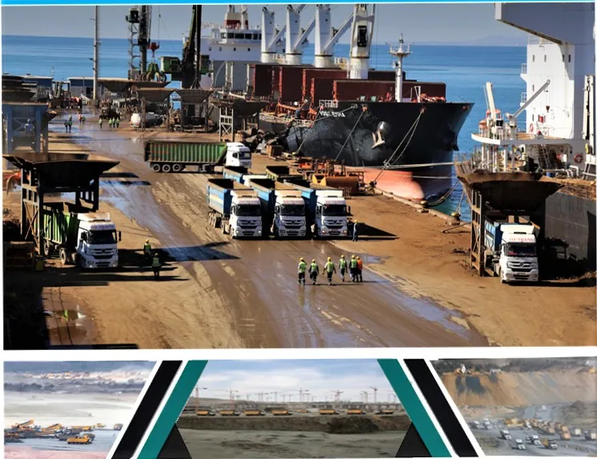

O nás
Skupina společností Dönmezoğlu (Dönmezoğlu Domestic and Foreign Trade Investment Co. Inc.) vznikla v roce 2003. Spojuje zkušenosti z logistiky, těžby, skladování, exportu a importu.
Logistika skupiny stojí na jednoduchém principu: dovézt zákazníkovi správné zboží ve správný čas, bez poškození a za co nejnižší náklady. Zajišťuje místní i dálkovou přepravu cementu, potravin, železa, oceli a dalších komodit mezi přístavy, sklady a továrnami.
Díky blízkosti přístavů v Iskenderunu (Limakport, Yazıcı Demirçelik, Assan, İsdemir, Ekinciler, MMK, Tosyalı a Atakaş) poskytuje nepřetržitou manipulaci a skladování včetně balení, značení a nakládky pro tuzemské i zahraniční zákazníky.
Logistiku skupina propojuje s těžbou. Do Evropy, na Dálný a Blízký východ vyváží průmyslové suroviny, mimo jiné bauxit, pemzu, bentonit, zinek, čedič, dolomit a červený tuf.

Značka Kiki Kat
Pod vlastní značkou Kiki Kat skupina vyrábí prémiové hrudkující stelivo pro kočky z bentonitu z tureckých ložisek. Než stelivo uvedla na trh, prošlo pečlivými analýzami a řadou testů, aby bylo co nejlepší pro zdraví a pohodlí koček.
Bentonitové stelivo Kiki Kat je velmi hygienické a šetrné k přírodě. Podle výrobce je v něm méně než 0,5 % prachu, výrazně méně než u běžně prodávaných steliv.
Kiki Kat v Česku
Do České republiky stelivo dovážíme přímo od výrobce a dodáváme ho velkoobchodně po paletách: prodejnám, chovatelským stanicím, útulkům i obcím.
Dovozce: [doplnit: název firmy, IČO]
Web výrobce: kikikatlitter.com · donmezoglu.com.tr